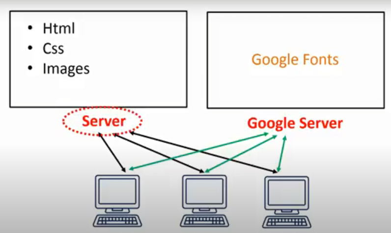
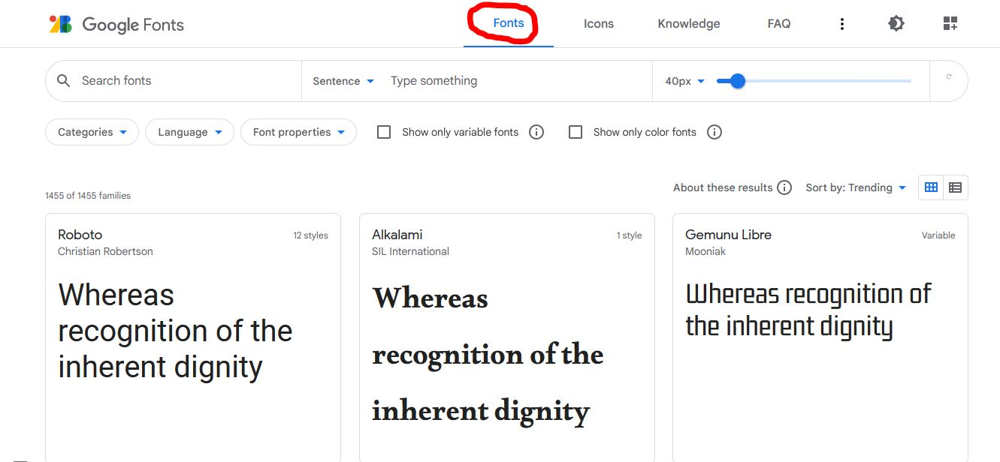
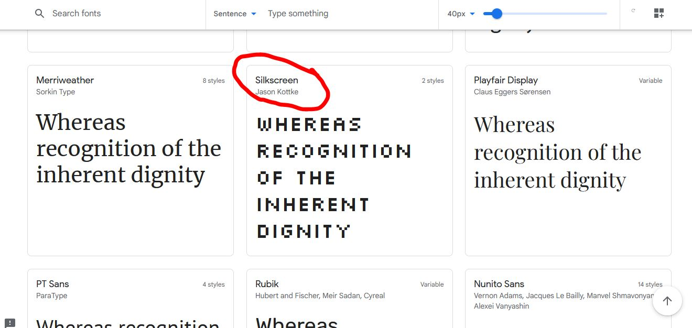
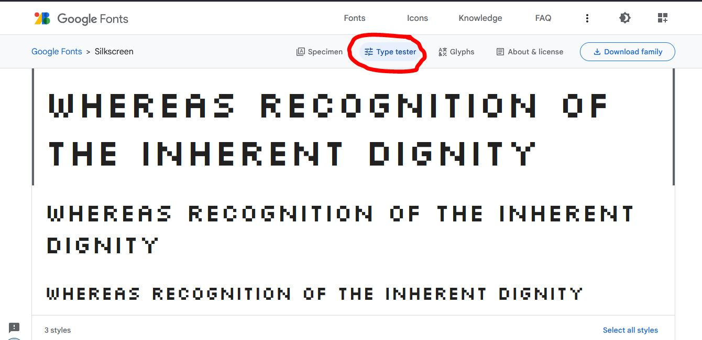
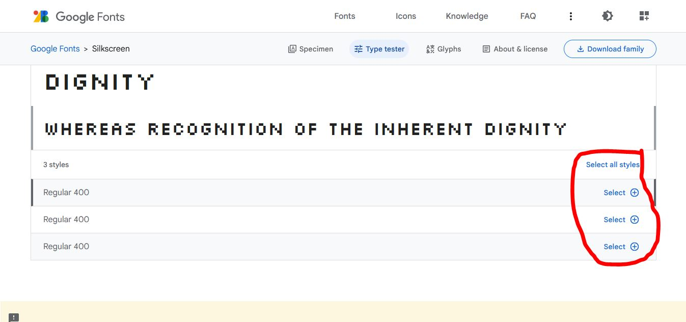
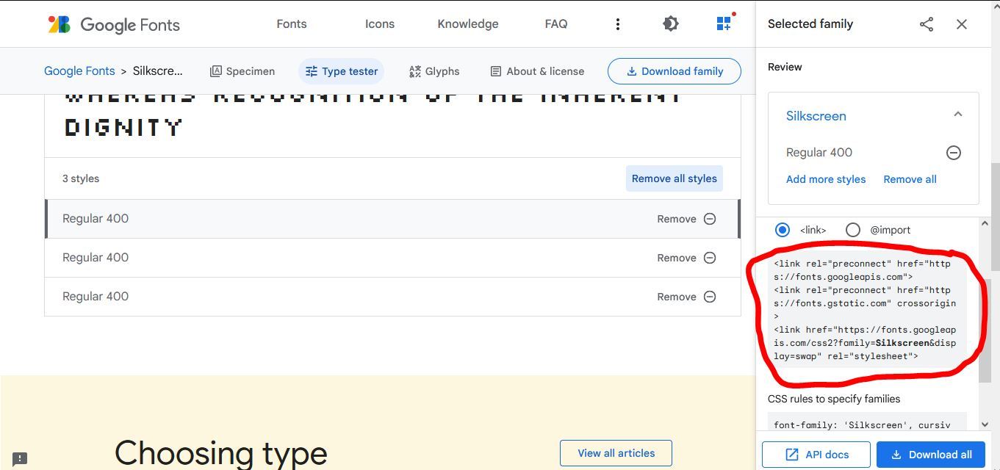
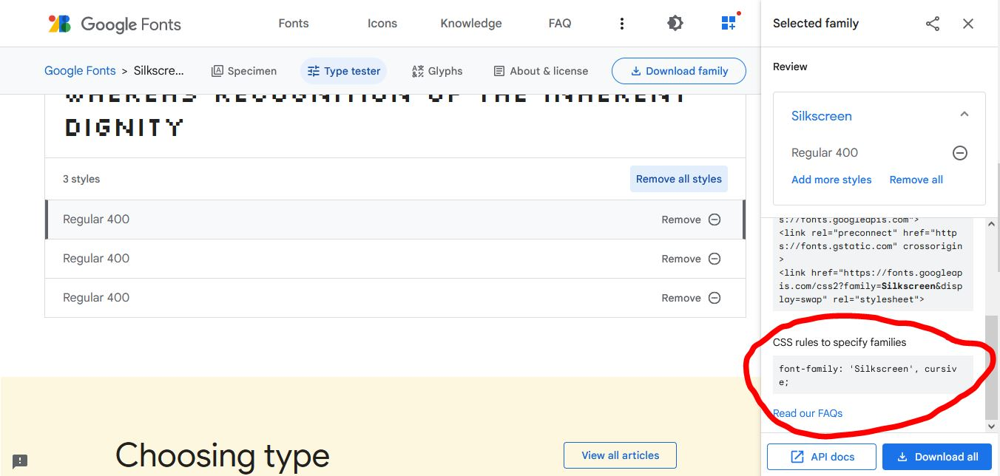

Google font:
In this we can add font-family from google.
when we use @font-face the load on the server is increased therefore we access the font from google seerver
Youtube Video Link...

follow the following steps:
1.) go to the website "fonts.google.com"
2.) select fonts from menu bar:

3.) select font-family which you want to add:

4.) click on type tester:

5.) select different font style of same font-family that we want to add:

6.) copy the link and paste in the head section of the html page.

7.) copy the font-family name and use it where we want to use:

Result of above steps:
My name is Arun Pawar